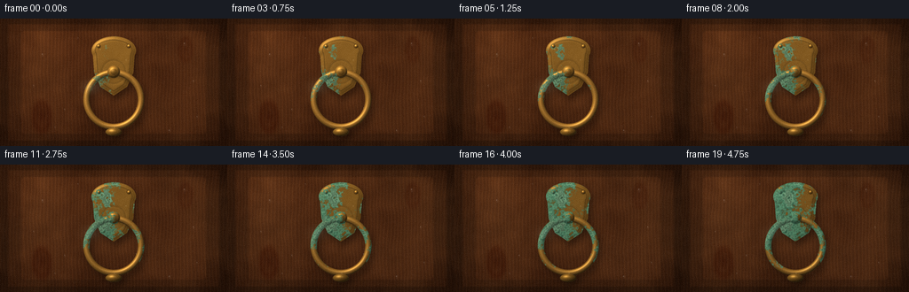
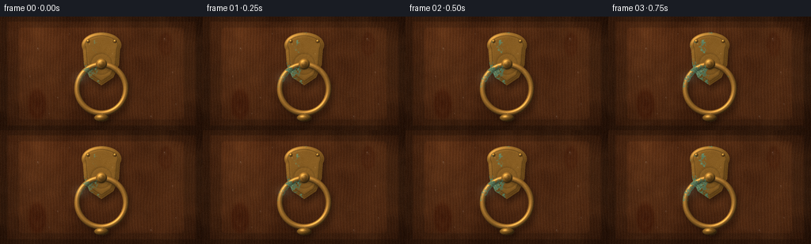
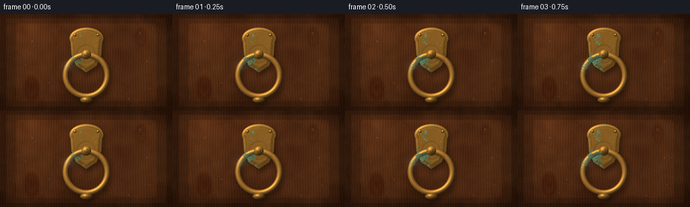

CODING AGENTS AS PIXEL WORLD MODELS
traex/DeepSeek-V4.1-Flash · material_0046
点击播放 · 原生 RGB 像素
此结果可播放，但该运行尚未通过最终提交审核。页面展示不代表评测通过。
逐轮保存的候选
回放视频、检查图与代码变化。
每份候选均可单独播放。实际图片检查记录在下方工具轨迹中。
候选 01播放与检查图
点击播放 · 原生 RGB 像素


展开代码变化
--- 上一保存版本
+++ 本次保存版本
@@ -0,0 +1,538 @@
+"""Procedural close-up of a brass door knocker oxidizing outdoors."""
+
+from pathlib import Path
+
+import cv2
+import numpy as np
+from PIL import Image, ImageDraw
+from scipy.ndimage import distance_transform_edt, gaussian_filter, shift
+
+import artifact_io
+
+
+OUT_W, OUT_H = 256, 144
+N_FRAMES = 20
+FPS = 4.0
+S = 4
+W, H = OUT_W * S, OUT_H * S
+CASE_DIR = Path(__file__).resolve().parent
+
+
+def smoothstep(edge0, edge1, value):
+ t = np.clip((value - edge0) / (edge1 - edge0), 0.0, 1.0)
+ return t * t * (3.0 - 2.0 * t)
+
+
+def normalize(vector):
+ length = np.sqrt(np.sum(vector * vector, axis=-1, keepdims=True))
+ return vector / np.maximum(length, 1e-6)
+
+
+def resize_noise(rng, shape, sigma):
+ small = rng.normal(0.0, 1.0, (max(2, shape[0] // 4), max(2, shape[1] // 4))).astype(np.float32)
+ large = cv2.resize(small, (shape[1], shape[0]), interpolation=cv2.INTER_CUBIC)
+ large = gaussian_filter(large, sigma)
+ return (large - large.mean()) / (large.std() + 1e-6)
+
+
+def alpha_over(dst, src, alpha):
+ a = np.clip(alpha, 0.0, 1.0)[..., None]
+ return dst * (1.0 - a) + src * a
+
+
+def shifted(array, dy, dx):
+ return shift(
+ array,
+ shift=(dy, dx),
+ order=1,
+ mode="constant",
+ cval=0.0,
+ prefilter=False,
+ )
+
+
+def draw_mask(draw_fn):
+ image = Image.new("L", (W, H), 0)
+ draw = ImageDraw.Draw(image)
+ draw_fn(draw)
+ return np.asarray(image, dtype=np.float32) / 255.0
+
+
+def render_base(rng):
+ yy, xx = np.mgrid[0:H, 0:W].astype(np.float32)
+ u = xx / W
+ v = yy / H
+
+ broad = resize_noise(rng, (H, W), 19.0 * S)
+ medium = resize_noise(rng, (H, W), 4.2 * S)
+ fine = resize_noise(rng, (H, W), 0.75 * S)
+
+ # Long, slightly wandering grain lines. The broad term gives boards their
+ # individual tone while the narrow ridges keep the close-up tactile.
+ wander = (
+ 0.021 * broad
+ + 0.008 * medium
+ + 0.0045 * np.sin(2.0 * np.pi * (v * 2.3 + u * 1.1))
+ )
+ phase = u * 67.0 + wander * 11.0
+ ridge = 0.5 + 0.5 * np.sin(2.0 * np.pi * phase)
+ ridge = ridge**3.6
+ micro_phase = u * 151.0 + wander * 17.0 + v * 1.7
+ micro = 0.5 + 0.5 * np.sin(2.0 * np.pi * micro_phase)
+ micro = micro**7.0
+
+ plank_tone = 0.5 + 0.5 * np.sin(2.0 * np.pi * (u * 3.0 + 0.16))
+ grain = 0.50 * ridge + 0.22 * micro
+ warmth = np.clip(0.58 + 0.20 * broad + 0.08 * medium, 0.0, 1.0)
+ wood = np.empty((H, W, 3), dtype=np.float32)
+ wood[..., 0] = 0.245 + 0.105 * warmth + 0.090 * grain - 0.032 * plank_tone
+ wood[..., 1] = 0.125 + 0.070 * warmth + 0.055 * grain - 0.022 * plank_tone
+ wood[..., 2] = 0.058 + 0.040 * warmth + 0.025 * grain - 0.012 * plank_tone
+
+ # A couple of restrained knots keep the wood from looking like a repeating
+ # procedural stripe.
+ for cx, cy, scale, strength in (
+ (47.0, 111.0, 9.0, 0.055),
+ (209.0, 35.0, 7.0, 0.042),
+ ):
+ dx = (xx / S - cx) / scale
+ dy = (yy / S - cy) / (scale * 1.7)
+ radius = np.sqrt(dx * dx + dy * dy)
+ ring = np.exp(-((radius - 1.0) / 0.33) ** 2)
+ core = np.exp(-(radius / 0.75) ** 2)
+ wood[..., 0] -= strength * (0.55 * ring + 0.70 * core)
+ wood[..., 1] -= strength * (0.62 * ring + 0.80 * core)
+ wood[..., 2] -= strength * (0.42 * ring + 0.50 * core)
+
+ # Door stiles, rails, and a raised central panel.
+ panel = draw_mask(
+ lambda d: d.rounded_rectangle(
+ (23 * S, 13 * S, 233 * S, 131 * S),
+ radius=5 * S,
+ fill=255,
+ )
+ )
+ panel_dist = distance_transform_edt(panel > 0.5) / S
+ panel_height = smoothstep(0.0, 5.5, panel_dist)
+ panel_height += 0.05 * broad
+ gy, gx = np.gradient(gaussian_filter(panel_height, 1.2 * S))
+ panel_normal = normalize(np.dstack((-2.4 * gx, -2.4 * gy, np.ones_like(gx))))
+ panel_light = np.clip(
+ panel_normal[..., 0] * -0.58
+ + panel_normal[..., 1] * -0.72
+ + panel_normal[..., 2] * 0.74,
+ 0.0,
+ 1.0,
+ )
+ panel_shadow = 1.0 - smoothstep(0.0, 2.3, panel_dist)
+ wood *= (0.91 + 0.17 * panel_light[..., None]) * (1.0 - 0.16 * panel_shadow[..., None])
+
+ # Outer frame and panel grooves.
+ frame = 1.0 - smoothstep(8.0, 10.5, np.minimum(xx / S, (W - xx) / S))
+ top_bottom = 1.0 - smoothstep(5.0, 7.5, np.minimum(yy / S, (H - yy) / S))
+ outer_dark = np.maximum(frame, top_bottom)
+ wood *= 1.0 - 0.22 * outer_dark[..., None]
+
+ return wood, broad, medium, fine, u, v
+
+
+def make_plate():
+ def paint(draw):
+ draw.ellipse((103 * S, 20 * S, 153 * S, 52 * S), fill=255)
+ draw.polygon(
+ [
+ (104 * S, 34 * S),
+ (106 * S, 61 * S),
+ (113 * S, 77 * S),
+ (128 * S, 87 * S),
+ (143 * S, 77 * S),
+ (150 * S, 61 * S),
+ (152 * S, 34 * S),
+ ],
+ fill=255,
+ )
+
+ mask = draw_mask(paint)
+ distance = distance_transform_edt(mask > 0.5) / S
+ return mask, distance
+
+
+def sphere_detail(cx, cy, radius):
+ yy, xx = np.mgrid[0:H, 0:W].astype(np.float32)
+ dx = xx / S - cx
+ dy = yy / S - cy
+ rr = np.sqrt(dx * dx + dy * dy)
+ alpha = 1.0 - smoothstep(radius - 0.7, radius + 0.35, rr)
+ z = np.sqrt(np.clip(1.0 - (rr / max(radius, 0.1)) ** 2, 0.0, 1.0))
+ normal = normalize(np.dstack((dx / max(radius, 0.1), dy / max(radius, 0.1), z + 0.08)))
+ return alpha, normal
+
+
+def shade_metal(base_rgb, normal, rough=34.0, strength=1.0):
+ light = np.array([-0.54, -0.76, 0.82], dtype=np.float32)
+ light /= np.linalg.norm(light)
+ half = light + np.array([0.0, 0.0, 1.0], dtype=np.float32)
+ half /= np.linalg.norm(half)
+
+ diffuse = np.clip(np.sum(normal * light, axis=-1), 0.0, 1.0)
+ specular = np.clip(np.sum(normal * half, axis=-1), 0.0, 1.0) ** rough
+ rim = (1.0 - np.clip(normal[..., 2], 0.0, 1.0)) ** 2
+ base = np.asarray(base_rgb, dtype=np.float32)
+ color = base * (0.34 + 0.82 * diffuse[..., None]) * strength
+ color += np.array([1.00, 0.82, 0.48], dtype=np.float32) * specular[..., None] * 0.58
+ color += np.array([0.12, 0.22, 0.28], dtype=np.float32) * rim[..., None] * 0.17
+ return color
+
+
+def render_metal(wood, broad, medium, fine, u, v):
+ yy, xx = np.mgrid[0:H, 0:W].astype(np.float32)
+ xf = xx / S
+ yf = yy / S
+
+ plate_alpha, plate_dist = make_plate()
+ pivot_r = np.sqrt((xf - 128.0) ** 2 + (yf - 60.0) ** 2)
+ motif = np.exp(-((pivot_r - 13.2) / 0.82) ** 2) * plate_alpha
+ border = np.exp(-((plate_dist - 4.4) / 0.55) ** 2) * plate_alpha
+ theta = np.arctan2(yf - 60.0, xf - 128.0)
+ flute_window = smoothstep(6.0, 12.0, pivot_r) * (1.0 - smoothstep(21.0, 28.0, pivot_r))
+ flute = (0.5 + 0.5 * np.cos(theta * 16.0)) * flute_window * plate_alpha
+
+ plate_height = smoothstep(0.0, 4.6, plate_dist)
+ plate_height -= 0.24 * border + 0.12 * motif + 0.025 * flute
+ plate_height += 0.035 * medium
+ plate_height = gaussian_filter(plate_height, 0.9 * S)
+ gy, gx = np.gradient(plate_height)
+ plate_normal = normalize(np.dstack((-4.2 * gx, -4.2 * gy, np.ones_like(gx))))
+ plate_color = shade_metal((0.61, 0.43, 0.17), plate_normal, rough=28.0)
+ plate_color *= (1.0 - 0.24 * border[..., None] - 0.10 * motif[..., None])
+
+ ring_center = np.array([128.0, 91.5], dtype=np.float32)
+ ring_radius = 30.8
+ tube_radius = 3.8
+ dx = xf - ring_center[0]
+ dy = yf - ring_center[1]
+ radial = np.sqrt(dx * dx + dy * dy)
+ tube_q = (radial - ring_radius) / tube_radius
+ ring_alpha = 1.0 - smoothstep(tube_radius - 0.75, tube_radius + 0.28, np.abs(radial - ring_radius))
+ ring_z = np.sqrt(np.clip(1.0 - tube_q * tube_q, 0.0, 1.0))
+ radial_safe = np.maximum(radial, 1e-4)
+ ring_normal = normalize(
+ np.dstack(
+ (
+ dx / radial_safe * tube_q,
+ dy / radial_safe * tube_q,
+ ring_z + 0.045,
+ )
+ )
+ )
+ ring_color = shade_metal((0.70, 0.48, 0.18), ring_normal, rough=24.0)
+ ring_color += np.array([0.12, 0.18, 0.22], dtype=np.float32) * (ring_z[..., None] ** 2) * 0.18
+
+ # Raised pivot and the four rivets that anchor the escutcheon.
+ pivot_alpha, pivot_normal = sphere_detail(128.0, 60.0, 7.2)
+ pivot_inner_alpha, pivot_inner_normal = sphere_detail(128.0, 60.0, 3.8)
+ pivot_color = shade_metal((0.72, 0.51, 0.20), pivot_normal, rough=18.0)
+ pivot_color *= 0.75 + 0.25 * (1.0 - pivot_inner_alpha[..., None])
+
+ rivet_alpha = np.zeros((H, W), dtype=np.float32)
+ rivet_normal = np.zeros((H, W, 3), dtype=np.float32)
+ rivet_color = np.zeros((H, W, 3), dtype=np.float32)
+ for cx, cy, radius in (
+ (111.0, 31.0, 2.3),
+ (145.0, 31.0, 2.3),
+ (110.0, 69.0, 2.0),
+ (146.0, 69.0, 2.0),
+ ):
+ alpha, normal = sphere_detail(cx, cy, radius)
+ color = shade_metal((0.70, 0.49, 0.19), normal, rough=20.0)
+ rivet_normal = alpha_over(rivet_normal, normal, alpha)
+ rivet_color = alpha_over(rivet_color, color, alpha)
+ rivet_alpha = np.maximum(rivet_alpha, alpha)
+
+ striker_alpha = 1.0 - smoothstep(
+ 0.92,
+ 1.08,
+ np.sqrt(((xf - 128.0) / 9.2) ** 2 + ((yf - 128.0) / 4.7) ** 2),
+ )
+ striker_normal = normalize(
+ np.dstack(
+ (
+ (xf - 128.0) / 9.2,
+ (yf - 128.0) / 4.7,
+ np.sqrt(
+ np.clip(
+ 1.0
+ - ((xf - 128.0) / 9.2) ** 2
+ - ((yf - 128.0) / 4.7) ** 2,
+ 0.0,
+ 1.0,
+ )
+ )
+ + 0.16,
+ )
+ )
+ )
+ striker_color = shade_metal((0.62, 0.44, 0.17), striker_normal, rough=23.0)
+
+ all_metal = np.maximum.reduce(
+ [
+ plate_alpha,
+ ring_alpha,
+ pivot_alpha,
+ rivet_alpha,
+ striker_alpha,
+ ]
+ )
+ object_shadow = gaussian_filter(shifted(all_metal, 4.8 * S, 3.0 * S), 4.0 * S)
+ wood = wood * (1.0 - 0.40 * object_shadow[..., None])
+
+ ring_shadow = gaussian_filter(shifted(ring_alpha, 2.4 * S, 1.4 * S), 1.8 * S)
+ plate_color *= 1.0 - 0.30 * ring_shadow[..., None] * plate_alpha[..., None]
+
+ metal = wood.copy()
+ metal = alpha_over(metal, plate_color, plate_alpha)
+ metal = alpha_over(metal, rivet_color, rivet_alpha)
+ metal = alpha_over(metal, ring_color, ring_alpha)
+ metal = alpha_over(metal, pivot_color, pivot_alpha)
+ metal = alpha_over(metal, striker_color, striker_alpha)
+
+ metal_normal = np.zeros((H, W, 3), dtype=np.float32)
+ metal_normal[..., 2] = 1.0
+ for alpha, normal in (
+ (plate_alpha, plate_normal),
+ (rivet_alpha, rivet_normal),
+ (ring_alpha, ring_normal),
+ (pivot_alpha, pivot_normal),
+ (striker_alpha, striker_normal),
+ ):
+ metal_normal = alpha_over(metal_normal, normal, alpha)
+
+ # Susceptibility is strongest in crevices and at exposed edges. Smooth,
+ # correlated noise lets the verdigris spread as colonies instead of a fade.
+ plate_edge = np.exp(-plate_dist / 2.7) * plate_alpha
+ ring_edge = np.exp(-((tube_radius - np.abs(radial - ring_radius)) / 1.15) ** 2) * ring_alpha
+ pivot_edge = np.exp(-((7.2 - np.minimum(pivot_r, 7.2)) / 1.2) ** 2) * pivot_alpha
+ rivet_edge = np.zeros_like(all_metal)
+ for cx, cy, radius in (
+ (111.0, 31.0, 2.3),
+ (145.0, 31.0, 2.3),
+ (110.0, 69.0, 2.0),
+ (146.0, 69.0, 2.0),
+ ):
+ rr = np.sqrt((xf - cx) ** 2 + (yf - cy) ** 2)
+ rivet_edge = np.maximum(rivet_edge, np.exp(-((radius - rr) / 0.8) ** 2))
+ edge_weight = np.maximum.reduce([plate_edge, ring_edge, pivot_edge, rivet_edge]) * all_metal
+
+ seed = np.zeros((H, W), dtype=np.float32)
+ for cx, cy, sigma, weight in (
+ (108.0, 78.0, 4.2, 0.20),
+ (148.0, 77.0, 4.5, 0.18),
+ (128.0, 122.0, 3.2, 0.17),
+ (106.0, 29.0, 2.7, 0.14),
+ (150.0, 47.0, 2.4, 0.13),
+ ):
+ seed += weight * np.exp(-((xf - cx) ** 2 + (yf - cy) ** 2) / (2.0 * sigma * sigma))
+
+ patina_noise = (
+ 0.54 * broad
+ + 0.30 * medium
+ + 0.16 * fine
+ + 0.72 * seed
+ + 0.38 * edge_weight
+ )
+ lo, hi = np.percentile(patina_noise[all_metal > 0.5], [2.0, 98.0])
+ patina_field = np.clip((patina_noise - lo) / (hi - lo + 1e-6), 0.0, 1.0)
+ return metal, metal_normal, all_metal, patina_field, edge_weight, medium, fine, xf, yf
+
+
+def apply_patina(metal, metal_normal, metal_alpha, patina_field, edge_weight, medium, fine, t, xf, yf):
+ target_coverage = 0.024 + 0.57 * (t**1.18)
+ threshold = np.quantile(patina_field[metal_alpha > 0.5], 1.0 - target_coverage)
+ growth = 1.0 / (1.0 + np.exp(-(patina_field - threshold) / 0.024))
+ growth *= metal_alpha
+
+ diffuse = np.clip(
+ metal_normal[..., 0] * -0.54
+ + metal_normal[..., 1] * -0.76
+ + metal_normal[..., 2] * 0.82,
+ 0.0,
+ 1.0,
+ )
+
+ tarnish = np.clip(
+ 0.11 + 0.29 * t
+ + 0.16 * edge_weight
+ + 0.055 * (0.5 + 0.5 * medium)
+ + 0.025 * (1.0 - t),
+ 0.0,
+ 0.58,
+ )
+ tarnish_color = metal * np.array([0.51, 0.44, 0.32], dtype=np.float32)
+ tarnish_color += np.array([0.018, 0.012, 0.002], dtype=np.float32)
+ metal = alpha_over(metal, tarnish_color, tarnish * metal_alpha)
+
+ deep_teal = np.array([0.20, 0.39, 0.31], dtype=np.float32)
+ sea_green = np.array([0.35, 0.55, 0.43], dtype=np.float32)
+ pale_mineral = np.array([0.57, 0.66, 0.53], dtype=np.float32)
+ mix = np.clip(0.5 + 0.22 * medium + 0.11 * fine, 0.0, 1.0)[..., None]
+ patina_color = deep_teal * (1.0 - mix) + sea_green * mix
+ crust = smoothstep(0.66, 0.95, 0.5 + 0.28 * medium + 0.16 * fine)
+ patina_color = patina_color * (1.0 - 0.36 * crust[..., None]) + pale_mineral * (0.36 * crust[..., None])
+ patina_color *= (0.73 + 0.42 * diffuse)[..., None]
+ patina_color *= (0.88 + 0.22 * (0.5 + 0.5 * fine))[..., None]
+
+ patina_alpha = np.clip(growth * (0.84 + 0.14 * (0.5 + 0.5 * medium)), 0.0, 0.96)
+ metal = alpha_over(metal, patina_color, patina_alpha)
+
+ pits = smoothstep(0.84, 0.97, 0.5 + 0.33 * fine + 0.17 * medium) * growth
+ metal *= 1.0 - 0.34 * pits[..., None]
+
+ # A cool exposed-metal sheen at the upper-left of the ring.
+ sheen = np.exp(
+ -(
+ (xf - 103.0) ** 2 / (2.0 * 7.0**2)
+ + (yf - 77.0) ** 2 / (2.0 * 5.0**2)
+ )
+ )
+ metal += np.array([0.08, 0.10, 0.10], dtype=np.float32) * sheen[..., None] * (1.0 - 0.45 * t)
+ return metal
+
+
+def add_water_beads(image, rng):
+ yy, xx = np.mgrid[0:H, 0:W].astype(np.float32)
+ xf = xx / S
+ yf = yy / S
+ beads = [
+ (48.0, 41.0, 1.55, 2.35),
+ (73.0, 103.0, 1.20, 1.85),
+ (208.0, 29.0, 1.80, 2.65),
+ (222.0, 111.0, 1.10, 1.55),
+ (191.0, 127.0, 1.55, 2.15),
+ (62.0, 123.0, 0.95, 1.35),
+ (38.0, 76.0, 1.10, 1.65),
+ (218.0, 71.0, 1.30, 1.95),
+ (88.0, 22.0, 0.85, 1.25),
+ (113.0, 35.0, 1.05, 1.45),
+ (142.0, 47.0, 0.85, 1.15),
+ (111.0, 59.0, 0.70, 0.95),
+ (101.5, 77.0, 0.95, 1.20),
+ (153.5, 101.0, 0.85, 1.10),
+ (129.0, 123.0, 0.80, 1.00),
+ (130.0, 127.0, 0.65, 0.80),
+ ]
+ for cx, cy, rx, ry in beads:
+ ex = (xf - cx) / rx
+ ey = (yf - cy) / ry
+ rr = np.sqrt(ex * ex + ey * ey)
+ alpha = 1.0 - smoothstep(0.82, 1.08, rr)
+ if alpha.max() <= 0.01:
+ continue
+ rim = smoothstep(0.55, 1.0, rr)
+ highlight = np.exp(-(((ex + 0.36) / 0.28) ** 2 + ((ey + 0.43) / 0.24) ** 2))
+ body = image * 1.08 + np.array([0.025, 0.035, 0.040], dtype=np.float32)
+ body *= (1.0 - 0.18 * rim[..., None])
+ body += np.array([0.42, 0.50, 0.56], dtype=np.float32) * highlight[..., None] * 0.75
+ image = alpha_over(image, body, alpha * 0.72)
+ return image
+
+
+def grade_frame(image, t, broad, medium, u, v):
+ yy, xx = np.mgrid[0:H, 0:W].astype(np.float32)
+ leaf_source = gaussian_filter(broad + 0.45 * medium, 14.0 * S)
+ leaf_source = (leaf_source - leaf_source.mean()) / (leaf_source.std() + 1e-6)
+ leaf_shift_x = 2.2 * S * np.sin(np.pi * (0.15 + 0.8 * t))
+ leaf_shift_y = 1.2 * S * (t - 0.5)
+ leaves = shifted(leaf_source, leaf_shift_y, leaf_shift_x)
+ leaf_shadow = smoothstep(0.34, 1.18, leaves) * 0.075
+
+ sun = np.exp(
+ -(
+ (u - 0.14) ** 2 / (2.0 * 0.30**2)
+ + (v - 0.10) ** 2 / (2.0 * 0.30**2)
+ )
+ )
+ image *= (0.93 + 0.16 * sun[..., None]) * (1.0 - leaf_shadow[..., None])
+ image *= np.array(
+ [
+ 1.025 - 0.045 * t,
+ 1.000 - 0.012 * t,
+ 0.945 + 0.030 * t,
+ ],
+ dtype=np.float32,
+ )
+
+ vignette = np.clip(
+ 1.0
+ - 0.24
+ * (
+ ((u - 0.5) / 0.72) ** 4
+ + ((v - 0.5) / 0.72) ** 4
+ ),
+ 0.68,
+ 1.0,
+ )
+ image *= vignette[..., None]
+ return image
+
+
+def main():
+ rng = np.random.default_rng(84621)
+ wood, broad, medium, fine, u, v = render_base(rng)
+ metal, metal_normal, metal_alpha, patina_field, edge_weight, patina_medium, patina_fine, xf, yf = render_metal(
+ wood, broad, medium, fine, u, v
+ )
+
+ final_frames = []
+ for index in range(N_FRAMES):
+ t = index / (N_FRAMES - 1)
+ frame = apply_patina(
+ metal.copy(),
+ metal_normal,
+ metal_alpha,
+ patina_field,
+ edge_weight,
+ patina_medium,
+ patina_fine,
+ t,
+ xf,
+ yf,
+ )
+ frame = add_water_beads(frame, rng)
+ frame = grade_frame(frame, t, broad, medium, u, v)
+
+ # The frame is rendered at 4x and downsampled once, giving the small
+ # brass details clean edges without expensive per-pixel supersampling.
+ frame8 = np.clip(frame * 255.0, 0.0, 255.0).astype(np.uint8)
+ small = np.asarray(
+ Image.fromarray(frame8, mode="RGB").resize(
+ (OUT_W, OUT_H), resample=Image.Resampling.LANCZOS
+ ),
+ dtype=np.float32,
+ )
+ grain = rng.normal(0.0, 1.55, (OUT_H, OUT_W, 1)).astype(np.float32)
+ grain += rng.normal(0.0, 0.45, (OUT_H, OUT_W, 1)).astype(np.float32)
+ small += grain
+ final_frames.append(np.clip(small, 0.0, 255.0).astype(np.uint8))
+
+ frames = np.stack(final_frames)
+ artifact_io.save(frames, CASE_DIR)
+
+ writer = cv2.VideoWriter(
+ str(CASE_DIR / "video.mp4"),
+ cv2.VideoWriter_fourcc(*"mp4v"),
+ FPS,
+ (OUT_W, OUT_H),
+ )
+ if writer.isOpened():
+ for frame in frames:
+ writer.write(cv2.cvtColor(frame, cv2.COLOR_RGB2BGR))
+ writer.release()
+
+ print(
+ f"Rendered {len(frames)} frames at {OUT_W}x{OUT_H}; "
+ f"mean RGB {frames.mean(axis=(0, 1, 2)).round(1).tolist()}"
+ )
+
+
+if __name__ == "__main__":
+ main()
候选 02播放与检查图
点击播放 · 原生 RGB 像素

展开代码变化
--- 上一保存版本
+++ 本次保存版本
@@ -16,6 +16,7 @@
S = 4
W, H = OUT_W * S, OUT_H * S
CASE_DIR = Path(__file__).resolve().parent
+VARIANT = "candidate_01"
def smoothstep(edge0, edge1, value):
@@ -207,8 +208,8 @@
plate_color *= (1.0 - 0.24 * border[..., None] - 0.10 * motif[..., None])
ring_center = np.array([128.0, 91.5], dtype=np.float32)
- ring_radius = 30.8
- tube_radius = 3.8
+ ring_radius = 31.0
+ tube_radius = 4.4
dx = xf - ring_center[0]
dy = yf - ring_center[1]
radial = np.sqrt(dx * dx + dy * dy)
@@ -225,7 +226,13 @@
)
)
)
- ring_color = shade_metal((0.70, 0.48, 0.18), ring_normal, rough=24.0)
+ ring_color = shade_metal((0.72, 0.49, 0.18), ring_normal, rough=22.0)
+ ring_texture = (
+ 0.45 * np.sin(radial * 8.5 + 1.6 * medium)
+ + 0.22 * np.sin(theta * 19.0 + radial * 1.1)
+ + 0.12 * fine
+ )
+ ring_color *= (0.97 + 0.035 * ring_texture)[..., None]
ring_color += np.array([0.12, 0.18, 0.22], dtype=np.float32) * (ring_z[..., None] ** 2) * 0.18
# Raised pivot and the four rivets that anchor the escutcheon.
@@ -287,7 +294,12 @@
wood = wood * (1.0 - 0.40 * object_shadow[..., None])
ring_shadow = gaussian_filter(shifted(ring_alpha, 2.4 * S, 1.4 * S), 1.8 * S)
- plate_color *= 1.0 - 0.30 * ring_shadow[..., None] * plate_alpha[..., None]
+ plate_color *= 1.0 - 0.24 * ring_shadow[..., None] * plate_alpha[..., None]
+
+ # A narrow bevel catches the sky along the plate's upper edge.
+ bevel = np.exp(-((plate_dist - 1.4) / 0.75) ** 2) * plate_alpha
+ upper_bevel = bevel * np.clip(0.5 - 0.8 * (yf - 46.0) / 70.0, 0.0, 1.0)
+ plate_color += np.array([0.12, 0.105, 0.06], dtype=np.float32) * upper_bevel[..., None]
metal = wood.copy()
metal = alpha_over(metal, plate_color, plate_alpha)
可观测工具轨迹
实际执行的命令与返回图片。
命令 1exit 0
/bin/bash -c "pwd && rg --files -g 'GENERATION_RULES.md' -g 'task_spec.json' -g 'prompt.txt' -g '"'!**/.git/**'"'"
命令 2exit 0
/bin/bash -c 'ls -la'
命令 3exit 0
/bin/bash -c 'git status --short'
命令 4exit 0
/bin/bash -c 'cat GENERATION_RULES.md'
命令 5exit 0
/bin/bash -c 'cat task_spec.json'
命令 6exit 0
/bin/bash -c 'cat prompt.txt'
命令 7exit 0
/bin/bash -c "sed -n '1,240p' artifact_io.py"
命令 8exit 0
/bin/bash -c "python - <<'PY'
import importlib.util
for name in ['numpy','PIL','scipy','cv2','skimage']:
print(name, bool(importlib.util.find_spec(name)))
PY"命令 9exit 0
/bin/bash -c 'fc-list | head -20'
命令 10exit 0
/bin/bash -c 'python --version && ffmpeg -version | head -1'
命令 11exit 127
/bin/bash -c "/usr/bin/time -f 'elapsed %E peak %MKB' python generate.py"
命令 12exit 0
/bin/bash -c 'time python generate.py'
命令 13exit 0
/bin/bash -c 'command -v chafa || command -v viu || command -v jp2 || command -v img2txt || true'
命令 14exit 0
/bin/bash -c 'du -sh . && find frames -maxdepth 1 -type f | wc -l && ls -lh pixels.npz index.html inspection.png transition_check.png video.mp4'
命令 15exit 0
/bin/bash -c "python - <<'PY' from PIL import Image import numpy as np for name in ['inspection.png','transition_check.png','frames/00.png','frames/10.png','frames/19.png','video.mp4']: try: im=Image.open(name) a=np.asarray(im) print(name, im.size, im.mode, a.shape, 'mean', a.mean().round(2), 'minmax', (a.min(),a.max())) except Exception as e: print(name, type(e).__name__, e) PY"
命令 16exit 0
/bin/bash -c "python - <<'PY'
from PIL import Image
import numpy as np
ims=[np.asarray(Image.open(f'frames/{i:02d}.png')).astype(float) for i in range(20)]
for i in [0,1,5,10,15,19]:
a=ims[i]
print(i, 'mean',np.round(a.mean((0,1)),1),'std',round(a.std(),1),'p5p95',np.percentile(a,[5,95]).round(1).tolist())
for i in range(1,20):
d=np.abs(ims[i]-ims[i-1])
print(f'{i:02d}',round(d.mean(),2),round(np.percentile(d,99),1))
PY"命令 17exit 0
/bin/bash -c "python - <<'PY'
from PIL import Image
import numpy as np
for idx in (0,19):
a=np.asarray(Image.open(f'frames/{idx:02d}.png')).astype(float)
# 4x3 mean-pool to 64x48
h,w,_=a.shape
a=a.reshape(h//3,3,w//4,4,3).mean((1,3))
r,g,b=a[...,0],a[...,1],a[...,2]
lum=a.mean(2)
chars=np.full(r.shape,' ',dtype='<U1')
chars[lum<10]='.'
chars[(lum>=10)&(lum<22)]=':'
chars[(lum>=22)&(lum<36)]='+'
chars[(lum>=36)&(lum<52)]='*'
chars[(lum>=52)&(lum<74)]='o'
chars[(lum>=74)&(lum<100)]='O'
chars[lum>=100]='@'
# brass highlights, green patina overlay, wood as lowercase
brass=(r>g*1.28)&(g>b*1.45)&(lum>35)
green=(g>r*1.03)&(g>b*1.18)&(lum>28)
chars[brass]='Y'
chars[green]='G'
print('\\nFRAME',idx)
print('\\n'.join(''.join(row) for row in chars))
PY"命令 18exit 0
/bin/bash -c "python - <<'PY'
import cv2, numpy as np
from PIL import Image
for i in [0,5,10,15,19]:
a=cv2.imread(f'frames/{i:02d}.png')[:,:,::-1]
r,g,b=[a[:,:,k].astype(float) for k in range(3)]
green=(g>r*1.02)&(g>b*1.15)&(g>30)
brass=(r>g*1.30)&(g>b*1.40)&(r>55)
wood=(r>g*1.25)&(r>40)&(r<125)
print(i, 'green',green.sum(),'brass',brass.sum(),'wood',wood.sum(), 'bright', (a.mean(2)>100).sum())
if i in (0,19):
n,l,st,c=cv2.connectedComponentsWithStats(green.astype('uint8'))
print('green comps', sorted(st[1:,cv2.CC_STAT_AREA].tolist())[-8:])
n,l,st,c=cv2.connectedComponentsWithStats(brass.astype('uint8'))
print('brass comps', sorted(st[1:,cv2.CC_STAT_AREA].tolist())[-8:])
print('green bbox',cv2.boundingRect(green.astype('uint8')))
PY"命令 19exit 0
/bin/bash -c "python - <<'PY'
from PIL import Image
import numpy as np
for idx in (0,19):
a=np.asarray(Image.open(f'frames/{idx:02d}.png')).astype(float)
h,w,_=a.shape
a=a.reshape(h//3,3,w//4,4,3).mean((1,3))
r,g,b=a[...,0],a[...,1],a[...,2]; lum=a.mean(2)
# metal: bright and warm or green, excluding dark wood
metal=((r>g*1.22)&(g>b*1.32)&(lum>55))|((g>r*1.015)&(g>b*1.15)&(lum>32))
chars=np.full(r.shape,' ',dtype='<U1')
chars[lum<8]=' '
chars[(lum>=8)&(lum<20)]='.'
chars[(lum>=20)&(lum<32)]=':'
chars[(lum>=32)&(lum<45)]='+'
chars[(lum>=45)&(lum<60)]='*'
chars[(lum>=60)&(lum<80)]='o'
chars[(lum>=80)&(lum<105)]='O'
chars[lum>=105]='@'
chars[metal&(lum<75)]='y'
chars[metal&(lum>=75)]='Y'
green=(g>r*1.015)&(g>b*1.15)&(lum>30)
chars[green]='G'
print('\\nFRAME',idx,'green',green.sum(),'metal',metal.sum())
print('\\n'.join(''.join(row) for row in chars))
PY"命令 20exit 0
/bin/bash -c "sed -n '1,80p' generate.py && sed -n '430,540p' generate.py && find . -maxdepth 2 -type f | sort | head -50"
命令 21exit 0
/bin/bash -c "mkdir -p candidate_01 && cp -a frames pixels.npz index.html inspection.png transition_check.png video.mp4 candidate_01/ && python - <<'PY'
from pathlib import Path
src=Path('generate.py').read_text()
src=src.replace('VARIANT = \"candidate_01\"','VARIANT = \"candidate_02\"')
Path('candidate_01/generate.py').write_text(src)
PY
time python generate.py"命令 22exit 0
/bin/bash -c "python - <<'PY'
from PIL import Image
import numpy as np, cv2
for label,root in [('v1','candidate_01'),('v2','.')]:
print(label)
for i in [0,5,10,15,19]:
a=np.asarray(Image.open(f'{root}/frames/{i:02d}.png')).astype(float)
r,g,b=[a[:,:,k] for k in range(3)]
green=(g>r*1.02)&(g>b*1.15)&(g>30)
brass=(r>g*1.30)&(g>b*1.40)&(r>55)
lum=a.mean(2)
print(i,'mean',np.round(a.mean((0,1)),1).tolist(),'green',int(green.sum()),'brass',int(brass.sum()),'p95',round(float(np.percentile(a,95)),1),'std',round(float(a.std()),1))
for i in range(1,20):
a=np.asarray(Image.open(f'{root}/frames/{i:02d}.png')).astype(float)
b=np.asarray(Image.open(f'{root}/frames/{i-1:02d}.png')).astype(float)
print(f'{i:02d}:{np.abs(a-b).mean():.2f}',end=' ')
print()
PY"保存候选 2 份；完成命令 22 次；可验证图片返回 0 张。原始 API 响应与完整日志保留在本地。